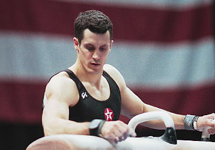

John Roethlisberger (USA)
1991-1993 NCAA AA Champion
4-Time US AA Champion
3-Time Olympian

Competition Results
1987
JO Nationals: 5th AA
US Olympic Festival: 13th AA
1988
Jr. US Championships: 5th AA
Jr. USA-ESP Dual Meet: 1st Team, 6th AA
1989
US Championships: 9th AA
US Olympic Festival: 8th AA
Winter Cup: 3rd AA
1990
Goodwill Games: 8th R
NCAA Championships: 2nd Team, 2nd AA, 4th R< 4th PB, 4th HB
US Championships: 1st AA, 2nd FX, 2nd PH, 4th HB, 6th R
1991
Champions All: 3rd AA
Chunichi Cup: 5th AA, 3rd PB, 4th V
NCAA Championships: 1st AA, 1st PB, 5th R, 7th FX
Tokyo Cup: 5th V
US Championships: 8th AA, 2nd V, 2nd PB, 6th R
1992
DTB Cup: 15th AA
NCAA Championships: 1st AA, 2nd FX, 2nd V, 6th R, 7th PB
Olympic Games: 6th Team, 34th AA
US Championships: 1st AA, 4th PB, 5th R, 5th HB
US Olympic Trials: 3rd AA
Winter Cup: 2nd AA
1993
Gander Memorial: 8th AA
NCAA Championships: 1st AA, 1st PH, 3rd HB, 4th PB, 8th FX
Swiss Cup Mixed Pairs: 10th Team
US Championships: 1st AA, 1st R, 3rd PB, 4th PH, 6th HB
1994
American Cup: 2nd AA
Intl. Mixed Pairs: 1st Team
US Championships: 4th AA
USA-BLR-CHN: 4th AA
Winter Cup: 1st AA
World Championships (Brisbane): 17th AA
1995
American Cup: 1st AA, 1st HB
Chunichi Cup: 6th AA, 3rd R, 3rd HB
Pan American Games: 1st Team, 2nd AA, 1st HB, 2nd R
Reese's International: 5th AA
US Championships: 1st AA, 1st PB, 1st HB, 2nd R, 5th PH
USA-UKR Dual Meet: 2nd Team, 2nd AA
World Championships: 30th AA, 8th R
1996
American Cup: 1st AA, 1st PH, 1st HB
Olympic Games: 5th Team, 7th AA
Reese's International: 2nd AA
3-on-3 Intl. Championships: 4th Team
US Championships: 2nd AA, 3rd PH, 4th HB, 6th FX, 6th PB
US Olympic Trials: 1st AA
1997
American Cup: 4th AA
Intl. Team Championships: 1st Team, 8th AA
3-on-3 Intl. Championships: 3rd Team
US Championships: 2nd AA, 1st PH, 1st HB
Winter Cup: 3rd AA
World Championships: 5th Team
1998
American Cup: 10th AA (prelims)
Intl. Team Championships: 1st Team, 6th AA
Winter Cup: 9th AA
1999
US Championships: 2nd AA, 1st PH
World Championships: 6th Team
2000
American Cup: 3rd AA, 1st R
Aussie Haircare International: 3rd AA
Olympic Games: 5th Team
US Championships: 5th AA
US Olympic Trials: 7th AA
Winter Cup: 5th AA
2001
Reese's International: 2nd AA
This page was created on January
16, 2005 and was last updated on November 19, 2005.
© Gymn Forum